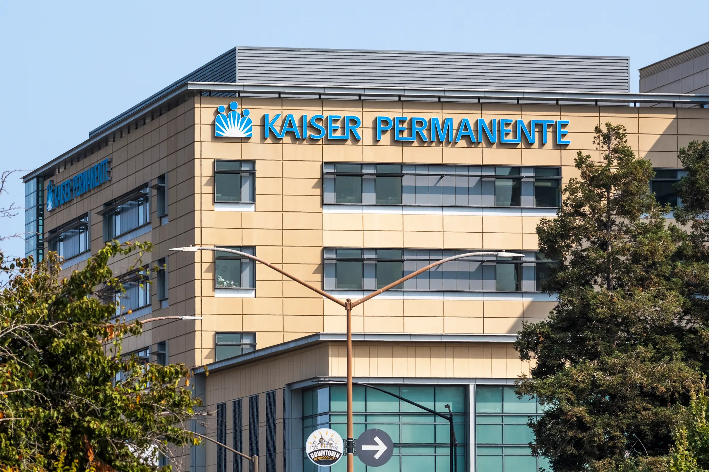
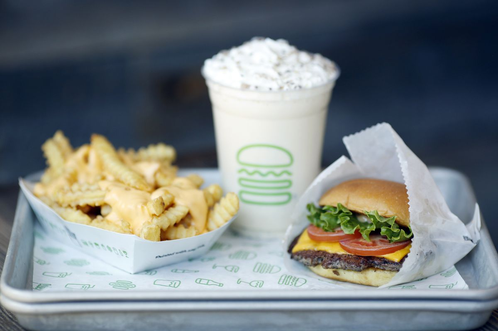
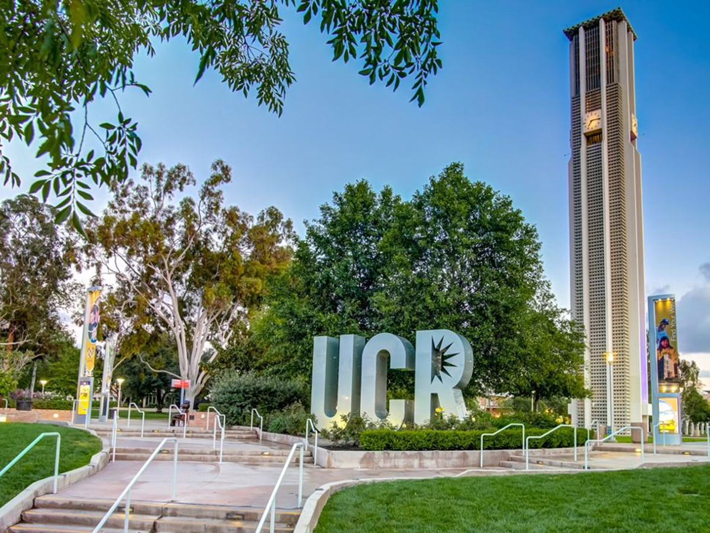
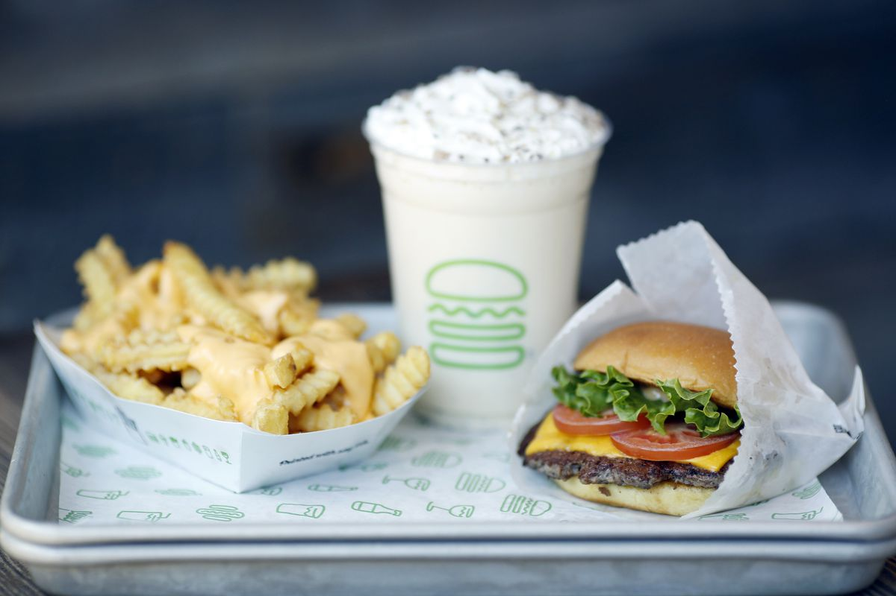
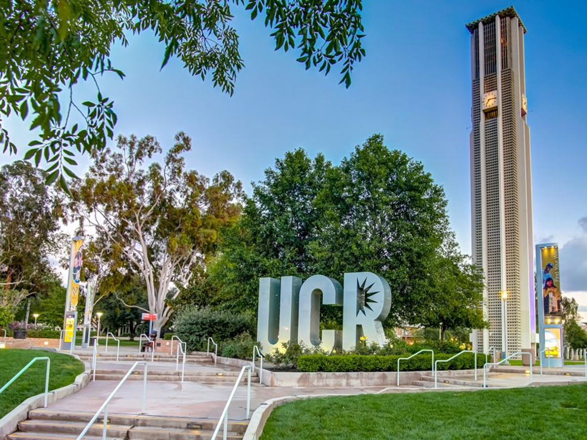

Jeddy Jacinto
I am a current third-year student at UC Riverside majoring in Political Science. I was born and raised in the Bay Area and hope to work as a paralegal after graduation while also aspiring to attend law school. I went to Menlo-Atherton High School and hope to settle down in the Bay Area one day. My choice in Political Science came from my interests in politics, history, social justice, and law. I began to be interested in these topics my senior year of high school after taking gender studies and becoming aware of the societal issues we face and the way politics and law play a big role in these topics. I ultimately wish to be a politician but hope to help individuals by being a civil rights attorney.
My skills include being fluent in Spanish and English, communicating well with others, problem-solving, time management, and knowledge of MS Office, G-suite, Canvas, and video conferencing. I have found being fluent in Spanish to be very helpful at my current job and know it is a skill not many people have or are confident in. I have some public affairs experience through an internship in the public affairs department at Kaiser Permanente. Most of my work experience consists of being in the food industry. However, being a manager at my current job, Domino’s, has taught me a lot of essential skills that I will need for my future career. I have learned how to be patient with customers who need explanations and how to manage the time of inexperienced employees during busy hours. I have learned how to properly communicate and train those employees. I also feel very confident in being able to figure out and work on my own with no supervision. I understand the importance and mechanics of certain things that go into running a business and being successful in performing.
My personal hobbies include experiencing new things whether that be events I have never gone to, eating new foods, traveling, and doing things that help me understand the different people and cultures around me. I enjoy learning about new things that may be out of the ordinary or not talked about and going into in-depth conversations about them so I can fully understand the topic. I also enjoy getting into constructive conversations on topics I do not agree on. I like seeing the other side of the conversation and trying to convince the other person to agree with me through factual evidence and points rather than emotions or opinions.
Experience
Paid Intern in the Public Affairs department
• Helped at the front desk, answered phones, and attended to people who would arrive at the public affairs department with questions or complaints
• Independently created weekly letters that went out to the public affairs department and other staff
• Organized and attended promotional events
Assistant Manager
• Assist in different tasks inside the store such as registering, answering calls, making food, etc.
• organize/note the end of day deposits and other financial records or transactions
General employee
• Different responsibilities such as taking orders, table checks, making the shakes, and bagging
• Experience with monitoring pick-up and delivery orders
• Ability to multitask in a fast-paced environment
Education
UC Riverside
Portfolio





